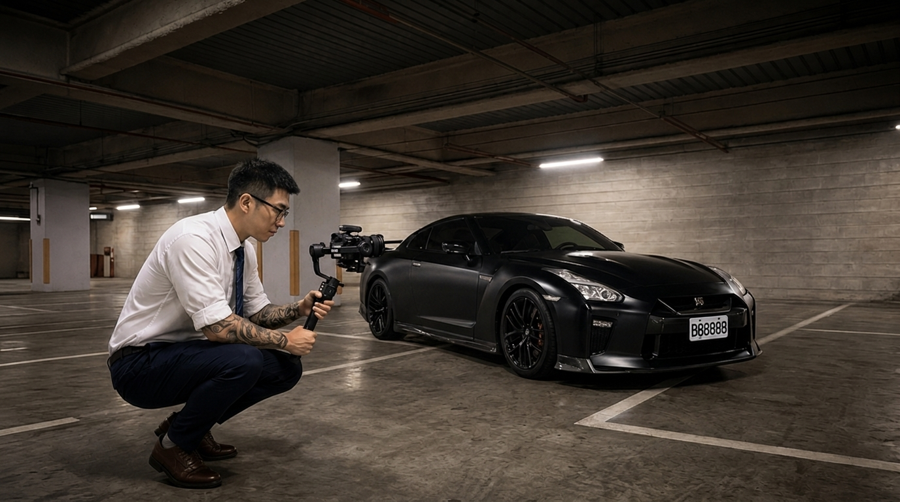
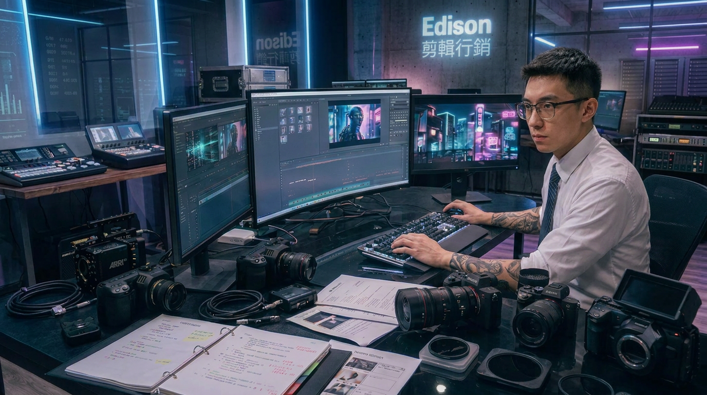

business.


works.
一部影片剪得好看，就一定能帶來客戶嗎？
我認為，畫面精緻、節奏流暢，只是一部影片最基本的條件。
真正重要的是，它能不能在前三秒抓住觀眾、把產品價值講清楚，最後引導觀眾採取行動，替品牌帶來詢問與轉換。
嗨，大家好，我是 Edison。
我擁有四、五年的攝影與剪輯經驗，同時也做過銷售、接觸過行銷，更有實際創業的經驗。
所以在製作影片時，我不會只站在剪輯師的角度思考，而是會從品牌定位、消費者心理和銷售流程出發，去設計影片的 Hook、內容節奏以及 CTA。
除了傳統的拍攝與剪輯，我也會運用 AI 動畫、視覺特效和場景設計，把原本難以拍攝、難以理解的內容，轉化成更直觀、更有記憶點的畫面。
我提供的不只是剪輯技術，而是一套結合影像、AI、行銷與銷售思維的內容解決方案。
因為一部真正有效的影片，不只要有人看，更要讓對的人看懂、相信，最後願意採取行動。
如果你也希望影片不只是好看，而是能真正幫品牌創造價值，我是 Edison，期待與你一起完成下一部作品。